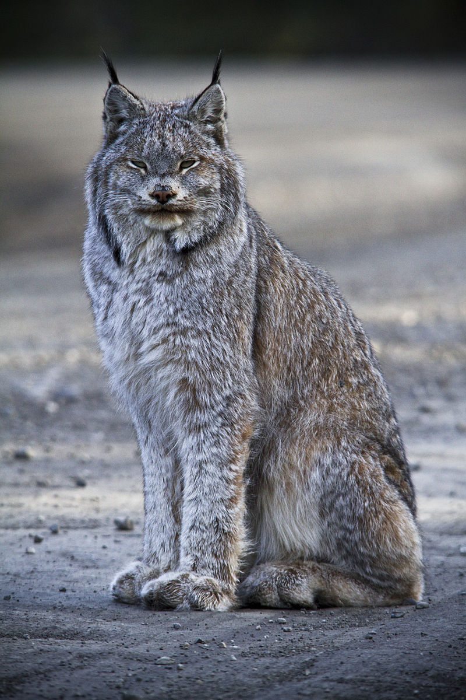

Canada Lynx
Intro

Canada Lynx (Lynx canadensis) are usually 80-100cm long, 48-56cm tall, and weigh 5-18kg. Their coat is usually a
yellowish brown with dense, thick fur which serves to protect it from the cold in the habitats it
lives in. They also have long tufts of fur on the tips of their ears, short tails, and flared out fur
on its face.
Lifestyle
The Canada Lynx typically live in forested areas with cold winters and
their primary prey, the snowshoe hare. They use the forest's undergrowth and fallen trees for
making their dens. Their habitat spans from Canada to the northern United States such as Maine,
Minnesota, and Washington.
Canada Lynx tend to be solitary animals, preferring to hunt and travel alone. They also are active both
night and day but tend to be more active at night.
While the Canada Lynx's main prey is the snowshoe hare, they will also eat mice, red squirrels, grouse
and carrion if there is a low snowshoe hare population where they are at the time.
Population
In the year 2000, the U.S. Fish and Wildlife Service designated the Canada Lynx as a threatened
species. However, in December of 2017, they started drafting a rule that they would be taken off the
list due to protective measures towards snow-loving big cats.
The Canada Lynx have a mating season from March to May. Their gestation period lasts about 63-70 days
so the babies are born in May or June. Usually, a litter of lynxes contains 1-5 kittens. They usually
give birth and store their kittens underneath a pre-existing physical feature like a root system or a
fallen tree rather than create a place for their den. The kittens will stay with their mother for
a year while learning how to hunt.